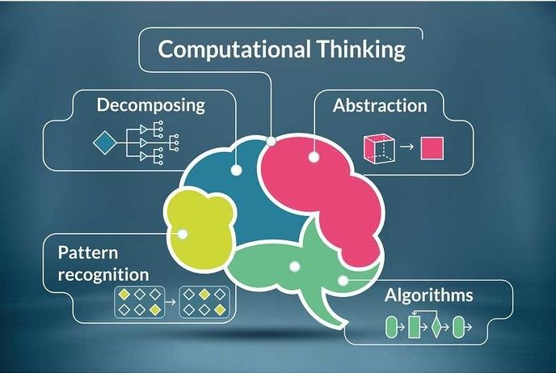
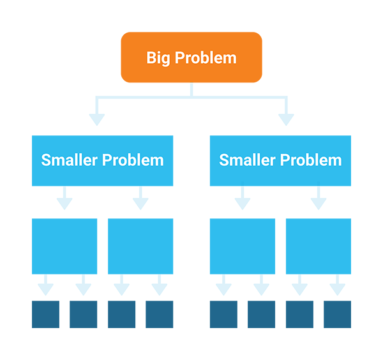
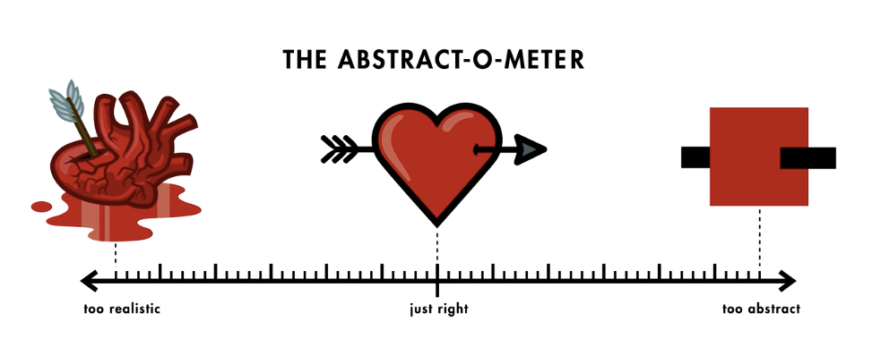

Problem DecompositionPattern RecognitionAbstraction
Introduction to Computational Thinking
Computational thinking is a problem-solving approach that draws on concepts fundamental to computer science. It involves breaking down complex problems into smaller, more manageable parts and developing systematic solutions that can be understood by humans and executed by computers.

What is Computational Thinking?
Computational thinking is not just for computer scientists or programmers. It's a universally applicable thinking skill set that helps solve problems in any field. The term was popularized by Jeannette Wing in 2006, who described it as "thinking like a computer scientist" when approaching problems.
At its core, computational thinking involves:
Analyzing and organizing data logically
Breaking down problems into manageable components
Recognizing patterns and commonalities
Developing step-by-step solutions
Using abstractions to manage complexity
The Four Pillars of Computational Thinking
Computational thinking is typically broken down into four key components:
1. Decomposition
Breaking down complex problems into smaller, more manageable parts that are easier to understand and solve.
2. Pattern Recognition
Identifying similarities or patterns among small, decomposed problems that can help us solve more complex problems more efficiently.
3. Abstraction
Focusing on the important information only, filtering out what is irrelevant to simplify the problem.
4. Algorithm Design
Developing a step-by-step solution to the problem, or a set of rules to follow for solving it.
Why Computational Thinking Matters
In our increasingly digital world, computational thinking has become a fundamental skill for:
Problem-solving in any domain - from science and mathematics to arts and humanities
Understanding complex systems - by breaking them down into understandable components
Automating solutions - creating repeatable processes for similar problems
Data analysis - organizing and interpreting large amounts of information
Let's explore the first two pillars of computational thinking in more depth and see how they work together to solve complex problems.
Decomposition: Breaking Down Problems
Decomposition is the process of breaking down a complex problem into smaller, more manageable sub-problems. This makes the original problem easier to understand and solve.

Approaches to Decomposition:
Functional Decomposition: Breaking down a process into its component functions or sub-tasks
Object Decomposition: Breaking down a system into its component objects and their relationships
Data Decomposition: Breaking down a large dataset into smaller chunks
Decomposition Example: Planning a Party
Planning a party is a complex task that can be broken down into manageable sub-tasks:
Create guest list
Choose a venue
Plan the menu
Arrange entertainment
Send invitations
Purchase supplies
Set up decorations
Each of these sub-tasks can be further decomposed. For example, "Plan the menu" might include: decide on dishes, check for dietary restrictions, source ingredients, and arrange cooking or catering.
Pattern Recognition: Finding Similarities
Pattern recognition involves identifying similarities or common patterns within or between problems. Recognizing patterns helps us:
Reuse solutions from similar problems
Develop more efficient approaches
Make predictions based on observed patterns
Group related items or concepts
Types of Patterns in Problem Solving:
Pattern Type
Description
Example
Similarity
Recognizing when problems have similar structures
Sorting algorithms can be applied to different data types
Frequency
Identifying recurring elements or events
Analyzing most common user behaviors in an application
Sequence
Recognizing order or progression
Identifying the steps in a natural process or workflow
Correlation
Identifying relationships between variables
Recognizing that higher temperatures correlate with increased ice cream sales
Pattern Recognition Example: Email Classification
Consider the task of organizing emails. By recognizing patterns, we can build a system that automatically categorizes emails:
Emails with terms like "invoice," "payment," or "receipt" might be financial
Messages from domains ending in .edu might be academic
Emails with "meeting," "agenda," or "schedule" could be work-related
Messages with "discount," "sale," or "offer" might be promotional
By identifying these patterns, we can create rules to automatically sort incoming emails into appropriate folders.
Combining Decomposition and Pattern Recognition
These two skills work powerfully together. After breaking down a problem through decomposition, we can look for patterns within and between the sub-problems, often revealing more efficient solutions.
Abstraction & Algorithm Design
The final two pillars of computational thinking - abstraction and algorithm design - help us manage complexity and create systematic solutions to problems.
Abstraction: Managing Complexity
Abstraction involves filtering out unnecessary details and focusing only on the relevant aspects of a problem. It's about identifying what's important and ignoring what's extraneous.

Levels of Abstraction:
Data Abstraction: Representing complex data in simplified forms (e.g., representing a person as a user object with specific attributes)
Procedural Abstraction: Hiding implementation details behind simple interfaces (e.g., using a function like "calculateTax()" without needing to know the tax calculation logic)
System Abstraction: Viewing complex systems at different levels of detail (e.g., seeing a computer as either a collection of applications or as hardware components)
Abstraction Example: Map Navigation
A city map is an excellent example of abstraction in daily life:
A detailed satellite view shows every building, tree, and car
A standard map abstracts away those details, showing only streets and major landmarks
A public transit map abstracts even further, showing only transit lines and stations
Turn-by-turn directions abstract to just the necessary steps to reach a destination
Each level of abstraction serves a different purpose and filters out unnecessary details while preserving essential information.
Algorithm Design: Creating Step-by-Step Solutions
An algorithm is a step-by-step procedure for solving a problem. Algorithm design involves creating clear, precise, and unambiguous instructions that can be followed to complete a task or solve a problem.
Characteristics of Good Algorithms:
Finiteness: The algorithm must terminate after a finite number of steps
Definiteness: Each step must be precisely defined
Input: The algorithm should have zero or more inputs
Output: The algorithm should have one or more outputs
Effectiveness: The operations must be basic enough to be carried out exactly
Algorithm Representation:
Algorithms can be represented in various ways:
Natural language: Everyday language (like a recipe)
Pseudocode: A structured, English-like syntax for describing algorithms
Flowcharts: Visual representations using standardized symbols
Programming languages: Formal languages with specific syntax and semantics
Algorithm Example: Making a Sandwich
Let's see how an everyday task can be expressed as an algorithm in pseudocode:
ALGORITHM MakeSandwich:
INPUT: bread, fillings, condiments
OUTPUT: completed sandwich
1. Place two slices of bread on a clean surface
2. IF condiments are available THEN
3. Apply condiments to one side of each bread slice
4. FOR EACH item in fillings DO
5. Place item on top of one bread slice
6. Place the second bread slice on top of the fillings, condiment-side down
7. IF sandwich needs to be cut THEN
8. Cut sandwich in half diagonally
9. RETURN completed sandwich
END ALGORITHM
This algorithm provides clear, step-by-step instructions that can be followed to create a sandwich successfully. Note how it includes decision points (IF statements) and repetition (FOR loop).
Computational Thinking in Practice
When we combine all four pillars of computational thinking, we develop a powerful approach to problem-solving:
Decompose the problem into manageable parts
Recognize patterns in and between those parts
Abstract away unnecessary details
Design algorithms to solve each part systematically
This approach can be applied to problems in virtually any domain, from science and engineering to business, arts, and personal life. As you continue to practice these skills, you'll develop a more systematic and effective approach to problem-solving.